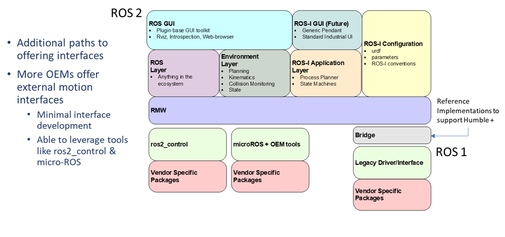

Robot Driver Support in ROS 2
Supporting industrial manipulators in ROS 2 involves a modular architecture that encourages vendor participation and minimizes custom integration effort. Rather than relying on generic middleware or legacy systems, the ROS-Industrial approach promotes the use of OEM-provided motion interfaces that align with ROS 2 tools and conventions.
OEM Motion Interfaces as the Foundation
A growing number of OEMs now provide ROS 2-compatible external motion interfaces. These interfaces typically require minimal integration effort and can directly leverage the ROS 2 ecosystem, including tools such as:
ros2_control – A modular and extensible framework for hardware abstraction and control
micro-ROS – Lightweight ROS 2 support tailored for embedded systems and edge controllers
Examples of current OEM-supported integrations:
Universal Robots (UR) – Integration through ros2_control
Yaskawa Motoman – Offers MotoROS2 and micro-ROS integration since May 2023
These examples demonstrate that vendor-provided solutions offer robust, production-ready interfaces that align with ROS 2 control frameworks and planning pipelines.
Layered Architecture for Industrial Robot Integration
The ROS-Industrial stack for manipulators is built on a layered architecture as illustrated:
{kind=link}
ROS GUI Layer – Plugin-based UI tools including RViz and browser-based interfaces
Environment Layer – Tools for planning, kinematics, collision checking, and world state
ROS-I Application Layer – Process planners and state machines for specific industrial workflows
ROS-I Configuration Layer – Standard parameter sets and interface conventions
Control Layer – Based on ros2_control, micro-ROS, or vendor-specific toolchains
Hardware Interface Layer – Bridges to OEM drivers or motion libraries
This modularity allows developers and OEMs to select the integration path that best suits their hardware and capabilities.